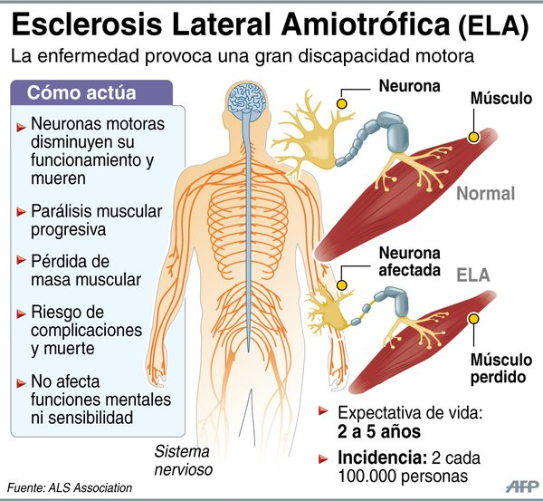
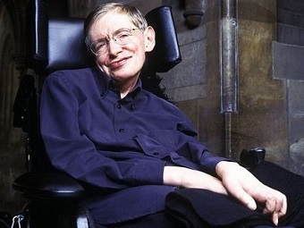

La esclerosis lateral amiotrófica (abreviadamente, ELA) es una enfermedad degenerativa de tipo neuromuscular. Se origina cuando unas células del sistema nervioso llamadas motoneuronas disminuyen gradualmente su funcionamiento y mueren, provocando una parálisis muscular progresiva de pronóstico mortal: en sus etapas avanzadas los pacientes sufren una parálisis total que se acompaña de una exaltación de los reflejos tendinosos (resultado de la pérdida de los controles musculares inhibitorios).
Entre algunas personas que padecen esta enfermedad se encuentra por ejemplo el físico Stephen Hawking o los músicos Mike Porcaro y Jason Becker.
En Estados Unidos es conocida como enfermedad de Lou Gehrig (por el jugador de los Yankees de Nueva York, retirado por esta enfermedad en el año 1939), y en Francia, enfermedad de Charcot.
A pesar de ser la enfermedad más grave de las motoneuronas, la ELA es simplemente una de las muchas enfermedades que existen en las que se ven afectadas estas células nerviosas. Entre otras, se incluyen en este tipo de enfermedades, la atrofia muscular espinal y sus variantes juvenil e infantil, en la que sólo se afectan las motoneuronas espinales, la esclerosis lateral primaria (ELP) en la que se afectan exclusivamente las motoneuronas centrales (cerebrales) y la enfermedad de Kennedy (atrofia muscular progresiva espinobulbar) que es un trastorno genético que afecta a varones de mediana edad.
El nombre de la enfermedad, descrita por primera vez en 1869 por el médico francés Jean Martin Charcot (1825-1893), especifica sus características principales:
En la ELA, las funciones cerebrales no relacionadas con la actividad motora, esto es, la sensibilidad y la inteligencia, se mantienen inalteradas. Por otro lado, apenas resultan afectadas las motoneuronas que controlan los músculos extrínsecos del ojo, por lo que los enfermos conservan los movimientos oculares hasta el final. Igualmente, la ELA no daña el núcleo de Onuf, por lo que tampoco resultan afectados los músculos de los esfínteres que controlan la micción y defecación.